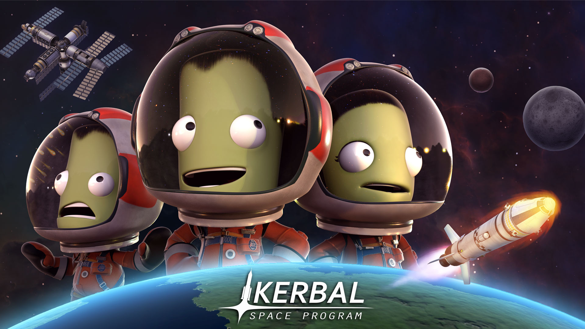

Apoapsis
The highest point of your orbit. This is where you loiter, plan, and wonder if you should have brought more fuel.

A rocket builder and flight sim with wickedly honest physics.
Kerbal Space Program is an addictively fun sandbox spaceflight simulator where building rockets is only half the chaos. Inside a mission planner and builder that hits the same childhood circuit as Lego, SimCity, and Minecraft, players end up learning real aerospace engineering, orbital mechanics, and planetary astronomy concepts. Usually by dooming their intrepid explorers to an endless parade of macabre endings worthy of national headlines and Hollywood disaster trailers.
If you, your kids, or the neighbor's labradoodle has even a passing interest in spaceflight, engineering, or building things for the sheer joy of watching them almost work, KSP is well worth a look. It has a wickedly gallows sense of humor, as reflected in this project, plus a slightly gentler than reality physics system with forgiving saves and revert buttons. Enough fudge factor to learn from catastrophe without making every maneuver feel like Apollo 13.
This site is here for the tricky bit: the whole flying through space thing. Orbital mechanics becomes surprisingly intuitive once you get a feel for the shapes, speeds, and timing, but the vocabulary can make a simple orbit change sound like a classified weapons program. These planners pair interactive calculators with plain-English explanations, so the jargon turns back into a mental model you can actually fly. If that scratches the itch, creators like Scott Manley and Matt Lowne have deep catalogs for going from "wait, what is apoapsis?" to "who says I can't build an orbital rail gun?"
Words that Mission Control keeps repeating while gaslighting you that this many alarms is normal.
KSP terminology referenceThe highest point of your orbit. This is where you loiter, plan, and wonder if you should have brought more fuel.
The lowest point of your orbit. This is where speed gets spicy and terrain gets aggressively confrontational.
Burn with your motion, tangent to the path. You shove sideways here; the far side climbs, and Mission Control quietly opens the fuel spreadsheet.
Burn against your motion. The far side drops, the numbers get smaller, and everyone pretends this was the plan.
Burn away from the planet. It yanks the orbit sideways, which is great if your goal is making the map lie creatively.
Burn toward the planet. The orbit kinks inward, and the terrain department starts reading the fine print.
Burn north of the orbital plane. Nothing gets higher; the whole racetrack tilts and the contract lawyers develop a twitch.
Burn south of the plane. Same tilt problem, opposite direction, fresh opportunity to miss the docking port with confidence.
Your budget for changing velocity. Fuel is money; delta-v is what the mission actually spends.
The tilt of your orbit. Equatorial, polar, retrograde: same planet, different bill from physics.
A temporary path between two useful orbits. It is the hallway, not the apartment.
The region where one body dominates your motion. Cross the border and a new gravity boss enters the chat.
Pick your next publicly televised space program disaster.
Single planet systems
Kerbin orbit changes, Mun and Minmus transfers, Duna to Ike, relay shells, polar scans, geostationary mischief, and the small local problems that teach the big interplanetary ones.
Start hereInterplanetary transfers
Transfer windows, planetary phase angles, ejection burns, arrival velocity, capture, aerobraking, and eventually moon assists without pretending the solar system is a polite spreadsheet.
Advanced maneuvers
The weird shelf: gravity assists, braking passes, resonance games, low-energy paths, and the maneuvers that make sense only after the simple burns have already humbled everyone involved.